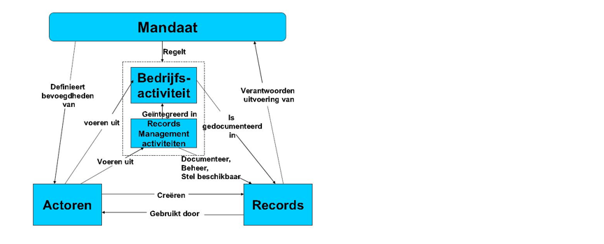

Dit document is aan verandering onderhevig. Het versiebeheer van het document
geeft inzicht in wijzigen en de actualiteit ervan.
Versie
Datum
Status
Bewerking
Toelichting
1.0
2 mei 2013
Vervallen
Geonovum
Oplevering
2.0
September 2019
Vervallen
Geonovum – Irina Entrop Nationaal Archief – Tom Derks Nationaal Archief – Wout van der Reijden
-Tekst door hele document geupdated - Bijlage 1: Begrippenlijst toegevoegd - Bijlage 2: Eisen voor duurzame toegankelijkheid van overheidsinformatie toegevoegd
2.0
Oktober 2019
Vervallen
Geonovum – Irina Entrop
Oplevering
2.1
Augustus 2022
Vervallen
Geonovum – Gijs Koedam, Monique van Scherpenzeel, Nationaal Archief - Anna van Lankvelt, Wout van der Reijden
Naast tekstuele wijzigingen ook accurate en actuele context en verwijzingen naar standaarden en wet- en regelgeving
2.1.1
April 2024
Vervallen
Geonovum - Monique van Scherpenzeel
Actualiseren van verwijzingen naar wet- en regelgeving en de onderdelen van de RO Standaarden. Ook aangepast is de wijze van verwijzen naar externe pagina's.
2.2
Oktober 2024
Definitief
Geonovum - Monique van Scherpenzeel, Nationaal Archief - Anna van Lankvelt, Annabelle Jansink
Actualiseren van de handreiking op basis van de laatste actualiseren wet- en regelgeving en standaarden. Bijlage Eisen voor duurzame toegankelijkheid van overheidsinformatie is vervallen.
1. Inleiding
Waarom een handreiking over het archiveren van digitale ruimtelijke plannen? In
dit hoofdstuk treft u de aanleiding en wordt aangegeven wat u van deze
handreiking kunt verwachten.
1.1 Aanleiding
In de praktijk van de ruimtelijke ordening zijn de digitale ruimtelijke plannen
van de Wet ruimtelijke ordening (Wro), de authentieke plannen. Dit betekent
dat een samenhangende set bronbestanden (dataset genoemd) conform de RO
Standaarden door gemeenten, provincies en het Rijk geproduceerd, beschikbaar
gesteld, vindbaar en toegankelijk gemaakt worden. Dit doen zij voor de ruimtelijke plannen genoemd in artikel
1.2.1 van het Besluit ruimtelijke ordening (Bro).
De samenhangende set bronbestanden is naast alle analoge en digitale stukken, zoals de ondergrond,
één van de onderdelen in de planprocedure. De bestuursorganen zijn tevens
verplicht conform de Archiefwet de ruimtelijke plannen te archiveren met als doel
de plannen in goede, geordende en toegankelijke staat te brengen en daarmee duurzaam toegankelijk te houden.
In de dagelijkse praktijk is het archiveren van de analoge stukken geen
probleem. Met betrekking tot het archiveren van de samenhangende set
bronbestanden heerst echter na bijna tien jaar digitalisering nog steeds veel
onbekendheid. Daarnaast wordt soms ten onrechte verondersteld dat de landelijke
voorziening Ruimtelijkeplannen.nl een archieffunctie heeft of zou moeten hebben.
Dit gaf aanleiding om samen
met experts van gemeenten, provincies, (destijds) het ministerie van Infrastructuur en Milieu en het Nationaal
Archief het digitaal archiveren van ruimtelijke plannen nader te onderzoeken en de resultaten samen te vatten in een praktische
handreiking. De centrale vraag die daarbij werd gesteld is “waar moet ik op
letten wanneer ik een ruimtelijk plan (bv. bestemmingsplan) archiveer c.q.
overdraag aan een archiefdienst?”.
Het doel van de handreiking is een aanzet te geven voor personen die betrokken
zijn bij het archiveren van data en voor degenen die betrokken zijn bij de creatie en
vaststelling van het ruimtelijke plan: ruimtelijke ordenaars,
informatieverzorgers en archivarissen bij een gemeente, provincie en het rijk.
Een aanzet om het werkproces zo in te richten dat ruimtelijke plannen worden
gearchiveerd, conform de voorgeschreven wet- en regelgeving. De handreiking
richt zich specifiek op het archiveren van de samenhangende set bronbestanden. De
handreiking kan een aanvulling zijn op het bestaande informatiebeleid binnen
deze bestuursorganen. Deze handreiking kan geen aandacht geven aan het
informatiebeleid zelf, omdat de keuze van onderwerpen en de prioritering daarin, voor
elke betrokken overheidsorganisatie anders kan zijn.
Wanneer de handreiking in de praktijk wordt gebruikt, kan blijken dat
aanscherping en/of uitbreiding van de handreiking wenselijk is. Bijvoorbeeld een
verdere uitwerking op documentniveau die nog nu nog beperkt is opgenomen.
Geonovum ontvangt graag deze informatie. U kunt ons dit laten weten via
onze helpdesk.
1.2 Leeswijzer
In hoofdstuk 2 komt het organiseren van het digitaal archiveren van ruimtelijke
plannen aan de orde: welke informatie moet eenmalig in de organisatie worden
vastgelegd, welke informatie meermalig. Dit hoofdstuk is de vertaling van
hoofdstuk 3 en hoofdstuk 4.
Om te kunnen duiden welke verantwoordelijkheden gemeenten, provincies en het
rijk hebben en mogelijk op een bepaalde manier zouden moeten uitvoeren, is de
context van wet- en regelgeving met daaruit voortvloeiende vereisten samengevat.
Deze vindt u terug in hoofdstuk 3 en hoofdstuk 4.
Zonder de medewerking van een aantal experts op het gebied van archiveren en
ruimtelijk ordening zou deze handreiking niet tot stand zijn gekomen. Zij worden
van harte bedankt en genoemd in Bijlage 2.
In dit hoofdstuk wordt in drie stappen uiteengezet welke informatie verzameld
moet worden om ruimtelijke plannen digitaal te archiveren. De stappen worden
genomen door de bestuursorganen en betreffen het vastleggen op organisatieniveau,
type plan en vervolgens het ruimtelijke plan zelf. Dit hoofdstuk is een
vertaling van de hoofdstukken drie en vier die de achtergrond van wet- en regelgeving
en andere belangrijke aspecten weergeven.
2.1 Algemeen
Het digitaal archiveren van de ruimtelijke plannen op grond van de Wro maakt nu
over het algemeen geen deel uit van het werkproces waarbij ruimtelijke plannen
worden gemaakt, vastgesteld en in werking treden. In wet- en regelgeving, zie
hoofdstuk 3 en hoofdstuk 4, is vastgelegd welke informatie tijdelijk of
permanent dient te worden bewaard, of er gebruik kan worden gemaakt van ‘zip’,
of dat archiveren alleen in bepaalde systemen is toegestaan. Zonder de
informatie uit deze hoofdstukken kan het lastig zijn dit hoofdstuk te
implementeren.
De focus van deze handreiking is erop gericht om een aanzet te geven het
werkproces zo in te richten dat ruimtelijke plannen worden gearchiveerd, conform
de voorgeschreven wet- en regelgeving. De handreiking richt zich op het
archiveren van de samenhangende set bronbestanden en de ondergrond van het
ruimtelijk plan. Daarvoor is in eerste instantie het verzamelen en borgen van
informatie nodig. Bij het digitaal archiveren van ruimtelijke plannen gaat het
om twee soorten informatie:
documentatie tijdens het werkproces;
de bronbestanden die samen het ruimtelijke plan vormen.
Welke bronbestanden samen het ruimtelijke plan vormen is mede bepaald door het
type ruimtelijke plan en wordt voorgeschreven vanuit de RO Standaarden
(zie paragraaf 3.1.2). De verschillende bestuursorganen maken gebruik van beheersoftware om deze verzameling (dataset) aan te leggen en beschikbaar te stellen.
In deze handreiking gaan we dan ook niet in op de wijze van verzamelen van de
samenhangende set van bronbestanden zelf, maar richten we ons op de
documentatie: welke informatie moet er worden gedocumenteerd met betrekking tot
het archiveren en waar ontstaat deze informatie in het proces van creatie en
vaststelling van het ruimtelijke plan?
De metagegevens, slechts een van de vele vereisten van het archiveren, zijn hierbij het uitgangspunt. Metagegevens zijn gegevens die de karakteristieken van archiefstukken beschrijven. Voorbeelden van karakteristieken
zijn de creator, de datum van creatie, de gebruikte taal en het bestandsformaat.
Metagegevens beschrijven niet alleen de archiefstukken zelf, maar ook de context
waarbinnen de archiefstukken zijn ontstaan of ontvangen. En wat er vanaf het moment
van ontstaan of ontvangst met die archiefstukken is gebeurd.
De handreiking kan tevens worden gebruikt als leidraad bij het archiveren van de
overige digitale archiefstukken die in het werkproces ontstaan, zoals
zienswijzen en andere onderdelen dan de samenhangende set bronbestanden van het
ruimtelijk plan. Het gebruik van een (bepaald) archiefsysteem (paragraaf 4.5)
komt niet aan de orde, omdat dit voor iedere organisatie weer anders kan zijn.
Dit heeft echter geen invloed op de het verzamelen van de informatie die
gearchiveerd moet worden.
Om te kunnen gaan archiveren moet dit worden georganiseerd voordat feitelijk
archiefstukken worden aangeboden. Het organiseren van dit archiveringsproces
valt uiteen in de volgende stappen:
inzicht krijgen in de organisatie van informatie in de organisatie;
indelen van ruimtelijke plannen per procedure;
vastleggen van informatie tijdens het werkproces.
De RO Standaarden maken gebruik van dossiers. Het ruimtelijke plan wordt met de
eventuele verschillende fasen vastgelegd in dat dossier en op die wijze
beschikbaar gesteld (paragraaf 3.2.1. De term dossier sluit aan op de in deze
handreiking ook aangehaalde term ‘zaak’. Het zaakgericht werken is een manier,
hulpmiddel bij het archiveren, echter geen verplichting.
2.2 Stap 1: inzicht in organisatie van informatie
Inzicht biedt organisaties duidelijkheid over:
welke informatie binnen de organisatie aanwezig is;
waar die informatie zich bevindt (systemen);
wie er verantwoordelijk is voor welke informatie.
Het DUTO-raamwerk van het Nationaal Archief is een instrument voor concrete, passende maatregelen voor het beheer van overheidsinformatie. Wanneer het raamwerk consequent wordt toegepast, is overheidsinformatie vindbaar, beschikbaar, leesbaar, interpreteerbaar, betrouwbaar en toekomstbestendig.
Voor het beschrijven van informatie(objecten), zoals de structuur en betekenis
daarvan, kan een informatiemodel gemaakt worden of gebruik gemaakt worden van
sectorspecifieke modellen. IMRO2012 is in dit geval een relevante
sectorstandaard gerelateerd aan ruimtelijke plannen.
De volgende ruimtelijke plannen worden door de verschillende bevoegde gezagen
gecreëerd:
Gemeenten
Provincies
Rijk
Beheersverordening
Aanwijzingsbesluit
Aanwijzingsbesluit
Bestemmingsplan
Inpassingsplan
Algemene Maatregel van Bestuur
Exploitatieplan
Provinciale verordening
Inpassingsplan
Omgevingsvergunning*
Reactieve aanwijzing
Reactieve aanwijzing
Structuurvisie
Structuurvisie
Rijksbestemmingsplan
Uitwerkingsplan
Voorbereidingsbesluit
Structuurvisie
Voorbereidingsbesluit
Voorbereidingsbesluit
Wijzigingsplan
In bovenstaande lijst komt ook omgevingsvergunning voor. Hiermee wordt
kortweg aangegeven de omgevingsvergunning voor het afwijken van een
bestemmingsplan: de mededeling van een met artikel 2.12, eerste lid, onderdeel
a, onder 3 van de Wabo verleende omgevingsvergunning.
Naast deze ruimtelijke plannen is de gerechtelijke uitspraak conform de RO
Standaarden ook een type ruimtelijk plan. De basis voor dit instrument is gelegd in het Bro artikel 1.2.1 lid 3 met
de daarbij behorende toelichting onderdeel L van de Nota van Toelichting.
Wanneer bijvoorbeeld in de
procedure van het bestemmingsplan beroep volgt, heeft de uitspraak gevolgen voor
het vastgestelde plan. Dit is een nieuwe fase in de procedure en wordt bij
voorkeur als subdossier binnen het bestemmingsplan gearchiveerd. Zie paragraaf
2.4.2.
Organisaties gebruiken meerdere systemen om informatie mee vast te leggen en te
beheren. Het archiveren van digitale ruimtelijke plannen kan in een of meerdere
van die informatiesystemen. Deze systemen kunnen specifiek voor archivering
bedoeld zijn, of vakapplicaties in het primaire proces die bepaalde
archiveringsfunctionaliteit hebben (zoals functionaliteit voor vernietiging). Een organisatie zal daarin keuzes moeten maken, omdat het gevolgen heeft voor
werkprocessen en de inrichting van systemen. Systemen zullen, idealiter by design, in staat moeten zijn om informatie duurzaam toegankelijk te kunnen houden voor zolang als nodig. Kaders voor de inrichting van systemen worden gegeven vanuit wet- en
regelgeving, maar ook vanuit normen en standaarden. Een overzicht hiervan is in
hoofdstuk 3 te vinden.
Als duidelijk is welke informatie zich waar bevindt, is het belangrijk om te
bepalen wie verantwoordelijk is voor de creatie en het beheer van informatie
gerelateerd aan ruimtelijke plannen (de ‘actor’). De vastlegging hiervan kan
door middel van metagegevens. Zeker in het geval van keteninformatisering is het
belangrijk dat de betrokken organisaties hierover afspraken maken. Meer informatie hierover vindt u in de Handreiking Archiveren in de informatieketen van het Nationaal Archief.
Informatie met betrekking tot identificatie van de eigenaar en maker van het
ruimtelijk plan wordt eenmalig in het gebruikte archiefsysteem van de
organisatie vastgelegd. In het kader van ruimtelijke plannen is onderstaande
informatie naar verwachting reeds vastgelegd en kan als eventuele controle
gebruikt worden.
De volgende metagegevens zijn of worden verzameld:
Zorgdrager Het bestuursorgaan dat conform de Archiefwet de verantwoordelijkheid heeft
voor het archiveren van het ruimtelijk plan wordt aangeduid als de
zorgdrager. Dit bestuursorgaan is conform de Wro de bronhouder van het
ruimtelijk plan. Bij de verschillende bestuursorganen zijn hiervoor aangewezen:
Gemeente: College van Burgemeester en Wethouders;
Provincie: Gedeputeerde Staten of Provinciale Staten;
Rijk: Betrokken Minister('s).
Toelichting gemeente: Conform artikel 3.1 van de Wet ruimtelijke ordening stelt de gemeenteraad
een ruimtelijk plan vast. Vanuit de Archiefwet is echter het college aangewezen
als zorgdrager. Verantwoordelijke voor het archiveren is daardoor niet
verantwoordelijke voor het vaststellen. Toelichting provincie: Afhankelijk van het type ruimtelijk plan/ zaaktype is Gedeputeerde Staten,
dan wel Provinciale Staten aangewezen als zorgdrager van het ruimtelijk plan.
Voor het vastleggen van en verwijzen naar institutionele informatie over
bestuursorganen kan gebruik gemaakt worden van het Actorenregister van het
Nationaal Archief. Op deze manier is een verwijzing in de metagegevens voldoende
en kan worden voorkomen dat deze informatie redundant bij de informatie zelf
wordt opgeslagen.
Beheerder De beheerder van het ruimtelijk plan wordt door het bestuur van de eigen
organisatie aangewezen. De beheerder legt bijvoorbeeld beheeractiviteiten
vast en deelt de activiteit in naar type plan en naar fase(n) van dat plan,
zie stap 2 in paragraaf 2.3.
Bijvoorbeeld: algemeen directeur bij een provincie- of gemeentesecretaris.
Archiefvormer De archiefvormer is de organisatie of het organisatieonderdeel dat het
ruimtelijke plan creëert. Dit kan tegelijkertijd ook de zorgdrager zijn. In
de loop der tijd kan het zorgdragerschap overgaan naar een andere
organisatie. Door het vastleggen van de archiefvormer is echter wel altijd
na te gaan wie de stukken oorspronkelijk creëerde of ontving en daar in
eerste instantie voor verantwoordelijk was.
Mandaat Het mandaat waaronder informatie wordt gevormd of ontvangen. In het
mandaatbesluit van het betreffende organisatieonderdeel is bepaald welk
ruimtelijk plan zij oplevert.
2.3 Stap 2: zaaktypen per procedure
Als duidelijk is welk organisatieonderdeel archiefstukken oplevert, wordt
informatie met betrekking tot de type ruimtelijke plannen eenmalig in de
organisatie vastgelegd. Er kan daarbij gebruik worden gemaakt van een zaaktypecatalogus waarin zaaktypen/ zaakomschrijvingen worden vastgelegd. Dit is niet verplicht; de desbetreffende overheid moet zelf beslissen hoe dit wordt bepaald.
De VNG heeft een GEMMA zaaktypecatalogus (ZTC) ontwikkeld
voor het ontwerpen, beheren en uitwisselen van zaaktypen. De laatste versie is beschikbaar via het overzicht op GEMMA online.
Welke ruimtelijke plannen conform de Wro en Wabo (daarmee zaaktypen) per
bestuursorgaan worden vastgelegd, is in paragraaf 2.2 aangegeven. Er moet
daarnaast onder andere gebruik worden gemaakt worden van RO Standaarden en de
metagegevens standaarden (paragraaf 3.2).
Het bepalen van het type ruimtelijk plan geeft tevens inzicht in de fasen en
onderdelen: welke activiteiten vinden er plaats tijdens de procedure van het
ruimtelijk plan en welke informatie is blijvend te bewaren. De selectielijst (paragraaf 4.2) geeft inzicht in de
bewaartermijn van het betreffende ruimtelijk plan. Een selectielijst geeft aan
hoe lang de verschillende archiefstukken bewaard moeten of mogen worden.
Het ontwerpen van een selectielijst, is verplicht voor
overheidsorganisaties op basis van artikel 5 van de Archiefwet 1995. Nieuwe selectielijsten worden voor het Rijk vastgesteld door
de minister van Onderwijs, Cultuur en Wetenschap vastgesteld door middel van een
vaststellingsbesluit.Voor de gemeentes en provincies wordt dit overkoepelend vastgelegd door de VNG en het IPO.
Per type plan wordt met betrekking tot de RO Standaarden is bepaald
hoe documenttypen worden gearchiveerd, zoals de plankaart, planregels en
met welke bestandsformaten.
Het is aan te bevelen om van te voren een begrippenlijst vast te leggen zodat er
geen verwarring kan ontstaan over bijvoorbeeld procedure, zaak of dossier.
Een ruimtelijk plan volgt een Wro/ Awb procedure. Bij het archiveren wordt
vaak gesproken over een zaak. De zaak is gelijk aan het dossier conform de RO
Standaarden: verzameling van samenhangende set van bronbestanden van het
betreffende ruimtelijke plan.
De meest ideale situatie is als alle bestuursorganen dezelfde begrippen zouden
hanteren. Bij het toepassen hoeven dan alleen de variabelen te worden ingevuld.
Dit is in de praktijk mogelijk nog niet haalbaar. In Bijlage 1 is een eerste opzet
met begrippen toegevoegd.
2.4 Stap 3: informatie vastleggen tijdens het werkproces
Per ruimtelijk plan wordt eenmalig per afzonderlijke procedure één
dossier/zaak in het informatiesysteem aangemaakt. Per fase in de procedure van
dit ruimtelijke plan wordt een nieuw subdossier aangemaakt. Er worden dus in het
geval van een bestemmingsplan meermalig subdossiers aangemaakt. Dit kan per
ruimtelijke plan verschillen en is bepaald via het zaaktype (paragraaf 2.3).
Bijvoorbeeld: bestemmingsplan Buitengebied is het dossier en het eerste
subdossier dat wordt aangemaakt is die van de fase ontwerp.
2.4.1 Dossier
Dossier is een veelgebruikte naam voor een samenhangende aggregatie
van archiefstukken met een eigen identiteit. Een standaard als MDTO schrijft geen aggregatieniveaus voor, maar biedt organisaties ruimte om
aggregaties (van archiefstukken) een naam te geven die aansluit bij de eigen
ordening van informatie.
In het dossier/ zaak wordt de volgende metagegevens met betrekking tot het
ruimtelijke plan vastgelegd:
Werkproces De naam van het werkproces is gelijk aan het zaaktype zoals in paragraaf 2.3
is aangegeven. Bijvoorbeeld: bestemmingsplan.
Identificatie (ID) Het ID van het archiefdossier is identiek aan het STRI2012 dossiernummer dat
bij de start van de creatie van het ruimtelijk plan door de betreffende
afdeling, dienst of team aan het ruimtelijk plan wordt toegekend.
Bijvoorbeeld: NL.IMRO.0034.BP2ABZ01
Beschrijving Voor het element beschrijving kan de beschrijving van het ruimtelijke plan
uit de toelichting of de beleidstekst van het betreffende ruimtelijke plan
worden gehaald. Het is niet verplicht een beschrijving toe te voegen, maar
geeft wel beter inzicht: welk ruimtelijk plan, welk gebied is dit?
Titel Voor het element titel wordt de naam van het plan gehanteerd zoals deze in
de GML en de plantekst is opgenomen. Het gaat in alle gevallen om het
attribuut “naam” van het respectievelijke plangebied in GML.
Bijvoorbeeld: Centrum Almere Stad
Externe relaties Met dit element wordt de relatie met andere zaken in het interne archief
systeem of externe zaken aangegeven. Deze informatie kan direct in de GML
opgenomen zijn door middel van waarde bij het attribuut
“relatieExternPlaninfo”. Deze informatie kan ook beschikbaar zijn via de
betreffende regels/ toelichting van het ruimtelijk plan. Bijvoorbeeld: een verwijzing naar raadsbesluit, een exploitatieplan heeft
een relatie met het bestemmingsplan, een verwijzing naar de structuurvisie
van een provincie.
Uitvoerende De naam van het organisatieonderdeel dat verantwoordelijk is voor het beheer
van de archiefstukken. Dit kan hetzelfde zijn als de archiefvormer (stap 1). Bijvoorbeeld: afdeling ruimtelijke ordening.
Activiteit Dit element betreft de activiteit van de zaak door de zorgdrager: wat
gebeurt er met de archiefstukken? Vooraf is per zaaktype (stap 2) vastgelegd
welke activiteiten per zaaktype kunnen plaatsvinden. Bijvoorbeeld: ontvangst, creatie, overdracht, overbrenging, verplaatsing,
conversie, wijziging, autorisatie, vernietiging.
Planning Planning is nauw verbonden met activiteit: met de planning van de
beheeractiviteit wordt aangegeven wat de planning van verschillende
activiteiten is en hoe lang deze activiteit duurt. De bewaartermijn worden
hier geconcretiseerd en gaan in op het moment dar de zaak wordt gesloten.
Bijvoorbeeld: vernietigingsjaar, overbrengingsjaar, jaar geplande conversie.
Aanwezigheid kopieversies Indien van toepassing geldt hier de aanduiding van de vindplaats van de
archiefstukken in andere beheeromgevingen.
Bijvoorbeeld: bij ketensamenwerking en in verband met het backupbeleid.
2.4.2 Subdossier
Binnen het ruimtelijk planproces zijn diverse fasen te onderscheiden. Per
dossier kunnen deze fasen verschillen. Per fase wordt in het dossier van het
betreffende ruimtelijk plan (zaaktype) een subdossier aangemaakt. Wanneer meer
dan één fase per dossier/ zaak is te onderscheiden worden subdossiers meermalig aangemaakt.
Naar voorbeeld van het bestemmingsplan of inpassingsplan kunnen de fasen en
daarmee de subdossiers concept, voorontwerp, ontwerp en vastgesteld worden
onderscheiden. Vervolgens kan nog een subdossier worden aangemaakt al naar
gelang het verloop van de bestemmingsplan procedure: geheel onherroepelijk in
werking, deels onherroepelijk in werking.
Per fase en daarmee subdossier wordt de volgende metagegevens verzameld.
Identificatie (ID) Het ID van het subdossier is gelijk aan het IMRO2012 planidentificatienummer
dat aan deze versie van het ruimtelijk plan door de betreffende afdeling,
dienst of team aan het ruimtelijk plan wordt toegekend.
Bijvoorbeeld: NL.IMRO.0034.BP2ABZ01-ON01
Beschrijving De beschrijving van dit stadium van het ruimtelijk planproces.
Bijvoorbeeld: ontwerp van het bestemmingsplan Centrum Almere Stad
Openbaarheid Beperkingen in verband met privacy, vertrouwelijkheid ed. worden bij dit
element verklaard.
Bronbestanden van ruimtelijke instrumenten zijn verplicht openbaar vanaf de
fase ontwerp.
Classificatie Niveau van informatiebeveiliging, bijvoorbeeld vertrouwelijk, geheim. Bij
bronbestanden van ruimtelijke instrumenten is dit niet van toepassing.
Rechten Auteursrecht, gebruiksrecht, eigendomsrecht etc.. Bronbestanden van
ruimtelijke instrumenten worden als open data beschikbaar gesteld.
Integriteit Informatie waaruit blijkt of een archiefstuk zijn integriteit heeft
behouden. In dit geval wordt informatie over het gebruikte PKI-Overheid
certificaat opgenomen waarmee de bronbestanden van een waarmerk zijn
voorzien. De versleuteling daarvan is opgeslagen in het bronbestand
geleideformulier.
Hoger liggend ordenings-niveau Hier wordt aangegeven waar dit subdossier onderdeel van uit maakt. Er wordt verwezen naar het dossier.
Aanwezigheid kopieversies Het bestuursorgaan stelt het betreffende ruimtelijke plan ook voor een ieder
beschikbaar via de weblocatie die is gemeld aan de Index van Ruimtelijkeplannen.nl. De
publicatiedatum van beschikbaarstelling wordt vastgelegd bij het archiveren
van de samenhangende set van bronbestanden.
Gemeenten, provincies en het Rijk zijn conform het Bro verplicht hun ruimtelijke plannen via
een vooraf opgegeven locatie aan eenieder beschikbaar, vindbaar en toegankelijk
te maken. De locatie wordt gemeld aan de index van de landelijk voorziening Ruimtelijkeplannen.nl.
2.4.3 Document
Binnen het subdossier worden de bronbestanden opgeslagen maar ook de ondergrond van
het ruimtelijk plan zelf:
IMRO (plankaart)
Planteksten
regels
beleids-/ besluitdocument
toelichting
Vaststellingsbesluit
Bijlage(n)
Illustratie
Geleidefomulier
Ondergrond
Conform de Standaard Toegankelijkheid Ruimtelijke Instrumenten kan de
samenstelling van de set bronbestanden per type ruimtelijk plan, maar ook per
fase van het plan, verschillen. Welke bestandsformaten moeten worden gebruikt is
tevens aangegeven in paragraaf 4.2 van de STRI2012. De ondergrond maakt geen deel uit van
de set van bronbestanden die het ruimtelijke instrument vormen. Om die reden
bevat de STRI2012 geen voorschrift over de toegelaten bestandsformaten voor de
ondergrond. De Praktijkrichtlijn Toegankelijkheid Ruimtelijke Instrumenten (PRTRI2012) geeft advies over het gebruik van het formaat.
Type
Met type en daaraan gekoppeld vorm, wordt concreet aangegeven welke
onderdelen (documenttypen) in dit subdossier vindbaar zijn. Bijvoorbeeld:
bronbestanden bestemmingsplan onderverdeeld naar kaart en regels met
toelichting en geleideformulier.
Binnen het dossier worden naast het ruimtelijk plan in bronbestanden ook
andere documenten verzameld.
Bijvoorbeeld: collegevoorstel, startdocument of zienswijzen.
Bestandsnaam De unieke bestandsnaam met bestandsformaat die aan ieder onderdeel van de
bronbestanden is meegegeven conform de RO Standaarden (STRI).
Vorm Met vorm wordt aangegeven de verschijningsvorm, dan wel documentvorm. Bij
zienswijzen is dit bijvoorbeeld pdf, maar in het kader van het voorbeeld bij
Type is dit: bronbestanden.
In de RO Standaarden (STRI) is vastgelegd wat onder bronbestanden worden
verstaan en welke onderdelen dit zijn per ruimtelijk plan.
Benodigde hulpmiddelen Naast Vorm wordt aangegeven hoe de bronbestanden kunnen worden
geraadpleegd, door middel van welke raadpleegsoftware. In het geval van
ruimtelijke plannen betreft het een viewer die de RO Standaarden
ondersteunt. Ook is het mogelijk, doordat gebruik is gemaakt van open
standaarden, in het kader van digitale duurzaamheid te verwijzen naar de RO
Standaarden. Door de beschikbaarheid van de open standaarden is op een later
tijdstip altijd de dataset van bronbestanden te interpreteren en te
verwerken voor het raadplegen.
Vindplaats De fysieke of virtuele vindplaats(-en) van het archiefstuk. Dit is de
vindplaats binnen de eigen organisatie, en niet de openbare vindplaats zoals
aangegeven in het manifest van het desbetreffende bestuursorgaan. In het
geval de bronbestanden niet in (bijvoorbeeld) een DMS zijn opgeslagen en de andere stukken
wel standaard in een DMS zijn opgeslagen, wordt aangegeven waar de
bronbestanden zijn opgeslagen.
3. Achtergrond: wetgeving en andere kaders
De handreiking richt zich met het vorige hoofdstuk op het organiseren van het
archiveren van ruimtelijke plannen. Om duidelijk te krijgen waarom juist deze
informatie moet worden verzameld is aan de handreiking ook wetgeving toegevoegd
om de wettelijk verplichtingen en kaders te kunnen bepalen. Dit hoofdstuk richt
zich op de Wet ruimtelijke ordening en de Archiefwet.
3.1 Wetgeving
Wat betreft wetgeving hebben we primair te maken met de Wet ruimtelijke ordening
en de Archiefwet. Deze worden achtereenvolgens behandeld in deze paragraaf.
3.1.1 Wet ruimtelijke ordening
De Wet ruimtelijke ordening (Wro) is op 1 juli 2008 in werking getreden. De
basis voor digitale ruimtelijke plannen is gelegd door voor verschillende
planprocedures aan te geven dat de betrokken overheid het betreffende plan,
visie of besluit tevens langs elektronische weg bekend maakt.
De uitwerking vindt plaats in het Besluit ruimtelijke ordening (Bro) waar met
artikel 1.2.1 is bepaald welke instrumenten uit de Wro de betrokken
bestuursorganen aan eenieder elektronisch beschikbaar moeten stellen. De
betrokken bestuursorganen zijn gemeenten, provincies en het Rijk. Vervolgens
bepaalt artikel 1.2.1 Bro dat er een landelijke voorziening is, waar deze
visies, plannen en besluiten raadpleegbaar zijn. Verder is in de artikelen 1.2.3
en 1.2.4 Bro bepaald dat een ondergrond samen met de visie, het besluit of plan
digitaal wordt vastgesteld.
Met de artikelen 1.2.5 en 1.2.6 Bro wordt de
ministeriële Regeling
standaarden ruimtelijke ordening geïntroduceerd waarin
nadere regels zijn opgenomen betreffende de geometrische plaatsbepaling en
elektronische beschikbaarstelling, vindbaarheid en toegankelijkheid van de
ruimtelijke plannen, visies en besluiten. De Regeling standaarden ruimtelijke
ordening geeft dan ook aan welke normen, aangeduid als de RO Standaarden, in
de praktijk moeten worden gebruikt.
Daarnnaast bepaalt het Bro met artikel 1.2.3 dat de
digitale vorm van het ruimtelijke plan de authentieke versie is. De papieren
vorm van de ruimtelijke plannen is daarvan een kopie.
3.1.2 Welke ruimtelijke plannen
In de vorige paragraaf is met artikel 1.2.1 Bro aangegeven welke ruimtelijke
plannen digitaal door de bevoegde gezagen conform de RO Standaarden beschikbaar
worden gesteld en vindbaar en toegankelijk worden gemaakt. Deze paragraaf geeft
een concreet overzicht. Dit is inclusief de omgevingsvergunning om af te wijken
van het bestemmingsplan op grond van de Wabo en het Besluit Omgevingsrecht (Bor).
De wet- en regelgeving verplicht het bestuursorgaan om de mededeling
(kennisgeving in de Staatscourant) van een met artikel 2.12, eerste lid,
onderdeel a, onder 3 van de Wabo verleende omgevingsvergunning met behulp van de
RO Standaarden beschikbaar te stellen. In het Besluit Omgevingsrecht (Bor)
artikel 6.14 is aangegeven dat bij ministeriële regeling nadere regels worden
gesteld over de wijze waarop de mededeling elektronisch wordt gedaan en
beschikbaar gesteld. Dit betreft de ministeriële Regeling
standaarden ruimtelijke ordening 2012.
Overzicht ruimtelijke plannen die door bevoegde gezagen conform de RO Standaarden beschikbaar
worden gesteld en vindbaar en toegankelijk worden gemaakt:
Voorbereidingsbesluit
Bestemmingsplan
Inpassingsplan
Rijksbestemmingplan
Wijzigingsplan
Uitwerkingsplan
Beheersverordening
Exploitatieplan
Gerechtelijke uitspraak
Omgevingsvergunning om af te wijken van het bestemmingsplan
Aanwijzingsbesluit
Reactieve aanwijzing
Gemeentelijke structuurvisie
Provinciale structuurvisie
Rijksstructuurvisie
Provinciale verordening
Algemene Maatregel van Bestuur
Daar waar gesproken wordt in deze handreiking over ruimtelijke plannen, worden
feitelijk bovenstaande plannen, visies en besluiten bedoeld. Digitaal geeft aan:
conform de RO Standaarden.
3.1.3 Archiefwet
Nederlandse overheidsorganen vallen onder de Archiefwet 1995. Specifieke
bepalingen uit de Archiefwet zijn uitgewerkt in het Archiefbesluit. En
gedetailleerde regels voor de informatiehuishouding en de archieven van de
overheid zijn geformuleerd in de Archiefregeling. Ieder overheidsorgaan moet
nadere regels vaststellen voor de organisatie van het archiefbeheer,
bijvoorbeeld in een Archiefverordening (specificatie van de wijze waarop de
zorgplicht zal worden uitgevoerd) en een besluit Informatiebeheer (specificatie
van de wijze waarop de beheerplicht zal worden uitgevoerd).
De Archiefwet en de regels die daaruit voortvloeien hebben betrekking op zowel
informatie die permanent bewaard moet blijven als op informatie die op termijn
vernietigd moet worden. De wet- en regelgeving op het gebied van archiveren heeft als
belangrijkste doel duurzame toegankelijkheid zodat informatie vindbaar, beschikbaar, leesbaar, interpreteerbaar, betrouwbaar en toekomstbestendig is.
Een belangrijk basisconcept daarbij is dat vorm, inhoud en structuur van archiefstukken
behouden moeten blijven of tenminste reproduceerbaar moeten zijn.
Module 2 van het DUTO-raamwerk van het Nationaal Archief geeft hier meer informatie over.
3.2 Normen en standaarden
3.2.1 Digitale ruimtelijke ordening
In het kader van de Wro zijn de RO Standaarden bepalend voor het uitwisselbaar,
beschikbaar, vindbaar en toegankelijk maken van de ruimtelijke plannen. De
Regeling standaarden ruimtelijke ordening 2012 geeft de volgende normen aan:
IMRO: Informatie Model Ruimtelijke Ordening De plankaart wordt in GML formaat conform het Informatie Model Ruimtelijke
Ordening opgeleverd. In deze GML is naast inhoudelijke planinformatie, ook
informatie over het plan opgenomen zoals gegevens over het bestuursorgaan en
status van het plan en de relatie naar de ondergrond die bij het plan wordt
vastgesteld. Deze ondergrond is geen onderdeel van de dataset maar moet wel
bewaard worden door het betreffende bestuursorgaan. Raad van State
bijvoorbeeld wil naast het plan zelf van een bepaald moment ook over de
daarbij vastgestelde ondergrond kunnen beschikken. Conform artikel 1.2.4 Bro moet bij het besluit tot vaststelling van het
ruimtelijk plan worden aangegeven welke ondergrond is gebruikt.
STRI: Standaard Toegankelijkheid Ruimtelijke Instrumenten Bij het beschikbaar en toegankelijk maken van ruimtelijke plannen moet de
Standaard Toegankelijkheid Ruimtelijke Instrumenten verplicht worden
toegepast. In de STRI worden eisen gesteld aan de bestandsextensies,
formaten, bestandsnamen, te gebruiken identificatienummer, het digitaal
waarmerken en de beschikbaarstelling zelf.
SVBP: Standaard Vergelijkbare Bestemmingsplannen In de Standaard Vergelijkbare Bestemmingsplannen is voor bestemmingsplannen,
inpassingsplannen, rijksbestemmingsplannen, wijzigings- en
uitwerkingsplannen aangegeven hoe deze van een verbeelding (weergave) in een
viewer (software) moeten worden voorzien. Voor andere ruimtelijke plannen
dan deze plannen geldt dat zij conform de Wro vormvrij zijn: geen
verbeeldingsafspraken.
IMROPT: Informatie Model Ruimtelijke Ordening Planteksten De standaard voor planteksten moet door de bestuursorganen onder voorwaarde
verplicht worden gebruikt. Toepassing van IMROPT2012 is verplicht wanneer
het bestuursorgaan ervoor kiest de planteksten in objectgerichte vorm (XML)
beschikbaar te stellen. Het bestuursorgaan mag er ook voor kiezen de
planteksten in de vorm van HTML en PDF bestanden beschikbaar te stellen.
IMROPT is in dit geval dan niet van toepassing.
In deze standaarden is bepaald dat ieder ruimtelijk plan, visie of besluit is
opgebouwd uit een samenhangende set bronbestanden (dataset genoemd). Voor
verschillende typen instrumenten is dit een andere set; welke planonderdelen bij welk instrument van toepassing zijn, is
aangegeven in hoofdstuk 2 van de STRI2012.
De dataset omvat de verschillende onderdelen van het ruimtelijk plan:
Plankaart;
Regels;
Toelichting;
Bijlage bij regels;
Bijlage bij toelichting;
Besluitdocument;
Beleidsdocument;
Geleideformulier.
Tot slot maken ook de praktijkrichtlijnen onderdeel uit van de RO Standaarden. De praktijkrichtlijnen geven toelichting op de normen IMRO, STRI, SVBP en IMROPT
door voor de gebruiker van de standaard per type ruimtelijk plan aan te geven
hoe het ruimtelijk plan moet en kan worden gemaakt volgens de standaard.
3.2.2 Archivering
Vanuit het oogpunt van archivering is, naast de Archiefwet- en regelgeving, een
aantal normen en standaarden te benoemen die de duurzame toegankelijkheid van
informatie ondersteunen:
DUTO-raamwerk: Geen norm of standaard maar een in Nederland breed toegepast praktisch hulpmiddel voor duurzame toegankelijkheid van overheidsinformatie in informatiesystemen, mede op basis van wet- en regelgeving en standaarden.
Norm Voorkeursformaten: Deze norm schrijft voor welke bestandsformaten op dit moment het meest geschikt zijn om digitale overheidsinformatie zo duurzaam toegankelijk mogelijk te bewaren.
NEN-ISO 30301: Managementsystemen voor archivering.
NEN-ISO 15489-1: Informatie- en archiefmanagement – Deel 1: Concepten en uitgangspunten: standaard waarin principes en uitgangspunten voor het beheer van archiefstukken worden beschreven.
NEN-ISO 23081: Metagegevens voor archiefstukken. De creatie van een metagegevensschema zoals bedoeld in deze standaard wordt ook voorgeschreven in de Archiefregeling.
NEN-ISO 14721: Open Archival Information System (OAIS) - standaard (referentiemodel) voor de functionaliteit van een e-depot.
NEN-ISO 16175: Internationale standaard Functionele eisen en bijbehorende richtlijnen voor applicaties voor het beheren van digitale archiefstukken.
TOOI: Model voor het definiëren van een gemeenschappelijke taal waarmee data en metadata uitgedrukt kunnen worden.
NEN-ISO 27000: Management systeem standaard voor informatiebeveiliging, in Nederland uitgewerkt in de Baseline Informatiebeveiliging Overheid (BIO).
ISO 19165-1:2018: Geographic information -- Preservation of digital
data and metadata -- Part 1: Fundamentals
ISO 19115-1:2014: Geographic information -- Metadata -- Part 1:
Fundamentals
Naast wetgeving en standaarden zijn er een aantal andere kaders die een rol
spelen bij ruimtelijke plannen. Een belangrijk kader is de [Nederlandse Overheid
Referentie Architectuur NORA.
NORA bevat principes, beschrijvingen, modellen en standaarden voor het ontwerp
en de inrichting van de elektronische overheid. Het centrale begrip is
“interoperabiliteit”: het vermogen van organisaties en mensen om informatie uit
te wisselen en die informatie te begrijpen en te gebruiken. NORA kent meerdere ‘dochters’, zoals GEMMA voor gemeenten, PETRA voor
provincies, EAR voor het Rijk en WILMA voor waterschappen. Uit NORA
vloeien, naast andere dossiers, zowel het dossier Geo-informatie als het dossier
voor beleidskaders voort, zie onderstaande figuur.
Het dossier Geo-informatie brengt ons waar de Wro ook naar toe leidt: via het Basismodel Geo-informatie (NEN3610) naar het domeinmodel voor de ruimtelijke ordening: IMRO. Figuur 2 laat de NEN3610 pyramide zien hoe het basismodel met de onderliggende families van informatiemodellen is ingebed in internationale standaarden.
Op hetzelfde niveau als dat raamwerk voor geo-standaarden past de Baseline
Informatiehuishouding binnen het dossier Beleidskaders. Voor zowel het rijk als
gemeenten is er inmiddels een specifieke Baseline vastgesteld. Deze Baseline is
het normenkader waarmee de informatiehuishouding van de overheid ingericht
wordt. Daarbij is rekening gehouden met onder meer de eisen uit de Archiefwet en
de standaarden voor archief- en informatiehuishouding die hierna zullen worden
toegelicht.
Figuur 2Basismodel voor geo-informatie met sectorale standaard voor de ruimtelijke ordening
3.4 Digitaal waarmerken
In de RO Standaarden is bepaald dat het ruimtelijk plan van een digitaal
waarmerk moet worden voorzien. De dataset van het ruimtelijk plan wordt met
behulp van een PKI-Overheid certificaat van een waarmerk voorzien. Op deze wijze
wordt de authenticiteit van het plan gewaarborgd; dit wordt voorgeschreven vanuit de RO Standaarden, onderdeel Standaard
Toegankelijkheid Ruimtelijke Instrumenten, zie hoofdstuk 6 van de
STRI2012.
Pas wanneer dit waarmerk aan het plan is toegevoegd, is dit het digitale authentieke plan conform de RO
Standaarden dat beschikbaar, toegankelijk en vindbaar moet zijn. Artikel 24 van de Archiefregeling schrijft voor dat, wanneer er gebruik is
gemaakt van een digitale waarmerk of handtekening conform de Wet elektronische handtekening in de metagegevens wordt
vastgelegd wie de houder is van de digitale handtekening, wanneer de
handtekening is gevalideerd en wat daar het resultaat van was, welke
functionaris verantwoordelijk was voor de validatie en de identificatie van het
certificaat van de digitale handtekening. De handtekening zelf hoeft volgens de
Archiefwet niet permanent bewaard te worden. De handtekening is slechts belangrijk voor de validatie en dit is bij het gebruik van het PKI-Overheid certificaat voor het waarmerken van de digitale ruimtelijke plannen al geregeld. Voor archivering is alleen belangrijk dát er gevalideerd is en door de juiste persoon.
3.5 Samenvatting wet- en regelgeving met bijbehorende standaarden
Model Aanwijzings- en benoemingsbesluiten informatiebeheer
Model Beheerregeling informatiebeheer
Model Raadsbesluit Archiefverordening 2017 (word 2.0 versie)
4. Achtergrond: belangrijke aspecten bij het archiveren
Nu de kaders van wet- en regelgeving zijn gegeven, wordt in dit hoofdstuk een
aantal randvoordwaarden op rij gezet. Randvoorwaarden die voortvloeien uit deze
kaders. We richten ons daarbij met name op de digitale aspecten van het
archiveren. Achtereenvolgens komen metagegevens, bewaartermijnen, toegestane
compressie en formaten en het bewaren van software aan de orde.
4.1 Metagegevens
Metagegevens zijn gegevens die de context, inhoud en structuur van archiefstukken beschrijven, evenals het beheer van die archiefstukken door de tijd heen. Ze zijn niet alleen onmisbaar om de terugvindbaarheid, bruikbaarheid,
authenticiteit, integriteit en betrouwbaarheid van de archiefstukken te garanderen en
het beheer ervan op lange termijn mogelijk te maken, maar ook zijn ze van
essentieel belang voor interoperabiliteit. Om het uitwisselen van archiefstukken tussen
systemen mogelijk te maken, moeten afspraken gemaakt worden over de manier
waarop dat gebeurt, in welke ‘taal’ deze systemen met elkaar spreken en hoe
metagegevens en archiefstukken geïnterpreteerd moeten worden. Uitwisseling tussen
systemen is zowel aan de orde binnen de bestuursorganen als tussen de
verschillende organisaties. Als het gaat om metagegevens zijn zulke
afspraken vastgelegd in onder andere metagegevensschema’s. In een digitale
wereld zijn metagegevens zo mogelijk nog belangrijker dan vroeger. Dat is ook de
reden dat metagegevens worden gezien als onlosmakelijk onderdeel van de
archiefstukken zelf.

Figuur 3Basismodel voor metagegevens van NEN ISO 23081
Bron: Sue McKemmish, Glenda Acland and Barbara Reed, Towards a Framework for Standardising Recordkeeping Metagegevens:
The
Australian Recordkeeping Metagegevens Schema en NEN-ISO 23081-1:2017 Metagegevens voor archiefstukken - Principes (paragraaf 9.1).
4.1.1 Standaard
De NEN-ISO 19115 metagegevens standaard voor geo-informatie is bij de meeste
overheden die met ruimtelijke plannen werken vermoedelijk wel bekend vanwege het toepassingsprofiel voor geo-informatie in Nederland. De Europese
richtlichtlijn INSPIRE verplicht het gebruik van het toepassingsprofiel. Er bestaat daarnaast een andere metagegevens standaard, de NEN-ISO 23081, die
specifiek betrekking heeft op metagegevens voor archiefstukken. Deze standaard
wordt ook genoemd in de Archiefregeling. Samengevat zegt de Archiefregeling het
volgende over metagegevens (artikelen 17, 19, 20 en 24 van de Archiefregeling):
Maak een metagegevensschema zoals bedoeld in NEN-ISO 23081;
Leg metagegevens vast over:
inhoud, vorm en structuur van de archiefstukken;
de context waarbinnen de archiefstukken zijn gevormd (binnen welkproces, door welke actor);
relatie met andere archiefstukken;
beheersactiviteiten die op de archiefstukken zijn uitgevoerd (denk aan conversie, migratie, selectie, openbaarmaking etc.);
software die gebruikt wordt om archiefstukken te beheren;
Zorg dat de koppeling tussen metagegevens en archiefstukken behouden
blijft. Dat betekent bijvoorbeeld dat er voorzieningen getroffen moeten
worden om die koppeling in stand te houden als de archiefstukken
verplaatst worden vanuit het ene naar het andere systeem.
4.1.2 Metagevensschema
Een metagegevensschema zoals bedoeld in NEN-ISO 23081 is een logisch ontwerp dat
de relatie tussen metagegevenselementen beschrijft door regels te benoemen voor
het gebruik en beheer van metagegevens, vooral met betrekking tot:
semantiek - welke naam kies je voor een element;
syntaxis - hoe wordt de inhoud van het element samengesteld, bijvoorbeeld yyyymmdd of ddmmyyyy;
het verplichtingenregime - welke elementen zijn verplicht en welke optioneel.
Tezamen wordt dit ook wel een elementen set genoemd. MDTO is een voorbeeld van
een elementenset. De elementenset is hier gespecificeerd vanuit het oogpunt
van duurzame toegankelijkheid en wordt geacht generiek te zijn (dus van
toepassing op alle soorten informatie). Organisaties kunnen daarnaast andere
metagegevens vastleggen voor andere doeleinden (zoals het specifiek beschrijven
van geo-informatie), met behulp andere standaarden of bestaande ontologieën
(zoals NEN-ISO 19115).
4.1.3 Software
In de metagegevens moet ook worden vastgelegd met welke applicatie de informatie is
gecreëerd, inclusief versienummer. Ook als er een nieuwe versie wordt
gecreëerd, moet dit worden vastgelegd. Dit is een voorbeeld van
‘event-history’ zoals in NEN-ISO 23081 en MDTO/TMR verder
wordt toegelicht.
Doordat de ruimtelijke plannen worden gemaakt met de wettelijke open standaarden (zie ook het Forum Standaardisatie) is er tot op heden geen aanleiding voor het bewaren van software. Er wordt uitgegaan
van het principe dat software (viewers) om de plannen weer te geven deze open
standaard moet kunnen lezen. Om de ruimtelijke plannen vanuit het archief direct
te kunnen raadplegen is het echter wel van belang dat de zorgdrager over
geschikte software beschikt.
4.2 Bewaartermijnen
De Archiefwet schrijft voor dat ieder overheidsorgaan moet beschikken over een
selectielijst, die door de minister wordt vastgesteld. In de selectielijsten is
bepaald of, en zo ja wanneer, archiefstukken vernietigd moeten worden.
De VNG en het IPO hebben bij mandaat generieke lijsten voor alle gemeenten respectievelijk provincies opgesteld, binnen het Rijk stelt elke zorgdrager een eigen selectielijst op.
Wanneer archiefstukken voor bewaring worden aangemerkt, moeten ze na maximaal
20 jaar na sluiting van het dossier (korter mag ook, langer niet -uitzonderingen daargelaten-) worden
overgebracht naar de archiefbewaarplaats die door de zorgdrager is aangewezen.
Het ministerie van OCW is voornemens om de overbrengingstermijn in de
nieuwe Archiefwet terug te brengen naar 10 jaar na creatie van het archiefstuk.
Voor de rijksoverheid bevindt die bewaarplaats zich bij het Nationaal Archief.
Gemeenten en provincies kunnen eigen archiefbewaarplaatsen hebben. Zij kunnen
ook daarin samenwerken, zoals bijvoorbeeld Regionale Archiefdiensten. Zolang de
plannen nog niet zijn overgebracht naar een archiefbewaarplaats is de beheerder
die is aangewezen door het bestuur, verantwoordelijk voor het duurzaam toegankelijk houden van de archiefstukken.
Ook voor ruimtelijke plannen is bepaald of ze voor bewaring of vernietiging op
termijn in aanmerking komen. Uit de desbetreffende selectielijsten blijkt dat
deze plannen doorgaans voor permanente bewaring worden bestemd. Vaak is daarbij
gespecificeerd dat het de vastgestelde versie van het plan betreft.
Voorbereidende stukken moeten op termijn vernietigd worden (de
vernietigingstermijnen variëren tussen de 5 en 20 jaar). De bepalingen in de
selectielijsten gelden voor alle archiefstukken ongeacht de vorm. Digitale ruimtelijke plannen vormen daarop geen uitzondering.
Het kan zijn dat per selectielijst de bewaarplicht van de verschillende
documenten, en stadia van documenten, verschillend is vastgesteld. Hieronder
volgt een korte opsomming.
Er wordt gewerkt aan de nieuwe Archiefwet, deze zal naar
verwachting behalve vernietiging en overbrenging naar een archiefbewaarplaats
(van te bewaren materiaal) ook nog een derde keuze bieden. Namelijk “de ontheffing van overbrenging”, hiermee wordt het onder strenge voorwaarden mogelijk dat een
archiefvormer/ zorgdrager zelf als archiefbewaarplaats wordt aangewezen voor bepaalde gegevensverzamelingen. Dit is
van belang voor organisaties die veel eigen permanent te bewaren dossiers voor langere tijd willen
hergebruiken. Denk hier bij o.a aan het Kadaster. Ontheffing van overbrenging heeft geen
invloed op de bewaartermijnen zelf maar wel op de locatie en de manier van
opslag van archiefstukken. Bij ‘langere tijd’ moet gedacht worden aan minstens 30 jaar. Als het hergebruik voor een kortere periode zal zijn, wordt het reeds bestaande instrument van ‘opschorting’ aangeraden. Hierbij wordt toestemming gevraagd om dossiers langer te mogen houden dan 10 jaar (de overbrengingstermijn onder de nieuwe Archiefwet). De ontheffing van overbrenging is vooral van toepassing op de centrale overheden. Voor decentrale overheden bestaat ook het instrument van ‘overbrengen zonder verplaatsing’. Hiermee gaat de verantwoordelijkheid voor de dossiers wel over naar de archiefdienst, maar blijven de dossiers op de locatie van de zorgdrager.
4.2.1 Gemeenten
De stukken die behoren bij de voorbereiding van het ruimtelijke plan, visie of
besluit worden 20 jaar bewaard. Blijvend bewaard worden de stukken van het
ruimtelijk plan, visie of besluit dat door de gemeente is vastgesteld. Na 20
jaar brengt de zorgdrager (de gemeente) de archiefstukken over naar de aangewezen
archiefbewaarplaats.
4.2.2 Provincies
Ruimtelijke plannen (zoals structuurvisies), ‘met inbegrip van voorstadia die om
inhoudelijke of procedurele redenen belangrijke wijzigingen van de tekst
bevatten’, worden gewaardeerd met bewaren. De waardering (bewaartermijn) van
overige conceptversies is niet specifiek geregeld. Na 20
jaar brengt de provincie de archiefstukken over naar de archiefbewaarplaats
in het eigen archief, streekarchief of Nationaal Archief
4.2.3 Het Rijk
Voor de rijksoverheid zijn per beleidsterrein voor de verschillende
archiefvormers (departementen, uitvoeringsorganisaties etc.) selectielijsten
vastgesteld. Ruimtelijke plannen vallen onder het beleidsterrein Ruimtelijke
ordening en geo-informatie. Selectielijsten zijn verzameld in het bijbehorende
‘Basisselectiedocument’ (BSD 120).
Kaarten zijn als onderdeel van het vaststellen en evalueren van beleid
betreffende ruimtelijke ordening gewaardeerd met bewaren (handeling 1, actor
minister belast met ruimtelijke ordening). Hier is niet expliciet een
onderscheid gemaakt tussen het bewaren van eindproducten en het na enige tijd
vernietigen van voorbereidende stukken.
De handelingen gelden ook voor onder het zorgdragerschap van de minister
vallende diensten, als daar geen aparte waardering voor is vastgesteld. Niet
expliciet genoemde archiefvormers die niet onder de minister belast met
ruimtelijke ordening vallen maar onder Economische Zaken, zoals de Dienst
Landelijk Gebied, kunnen gebruikmaken van handeling ‘Het bijdragen aan de
totstandkoming van nota's, programma's, plannen en maatregelen betreffende de
ruimtelijke ordening op provinciaal of regionaal niveau’ (uit het BSD Landinrichting, minister LNV, waardering Bewaren BSD 59: zie de
Selectielijst van het ministerie van Binnenlandse zaken en Koninkrijksrelaties.
4.3 Toegestane compressie en bestandsformaten
4.3.1 Bestandsformaten
Artikel 26 van de Archiefregeling schrijft voor dat digitale archiefstukken
opgeslagen worden in een open, en daarmee valideerbaar en gedocumenteerd
bestandsformaat. Dat betekent dat informatie over de eigenschappen van dat
formaat bekend en vrijelijk beschikbaar zijn. Het voorschrift dat een
bestandsformaat valideerbaar moet zijn, is in de eerste plaats bedoeld om vast
te kunnen stellen dat het bestandsformaat ook daadwerkelijk is wat het lijkt te
zijn. Validatie kan bijvoorbeeld via een register van bestandsformaten, zoals PRONOM. In Nederland houdt het Forum Standaardisatie voor de overheid een
lijst bij van geadopteerde open standaarden. Het Nationaal Archief heeft mede op
basis hiervan de landelijke Norm Voorkeursformaten ontwikkeld. Hiermee worden organisaties handvatten geboden om te bepalen welke bestandsformaten worden gebruikt om de informatie goed te kunnen archiveren in samenspraak met het Nationaal Archief en andere archiefinstellingen.Wanneer een organisatie bestandsformaten gebruikt die niet op de lijst staan dan is er altijd ruimte om deze bestandsformaten en de
eventuele voor- en nadelen met het Nationaal Archief te bespreken.
Archiefinstellingen met een eigen archiefbewaarplaats maken hun eigen keuzes
omtrent de bestandsformaten die zij accepteren. Over het algemeen gaat de keuze
voor bestandsformaten uit naar formaten die open source zijn en/of voldoen aan
open standaarden. Specifieke bestandsformaten die in het geo-informatie werkveld
worden gebruikt zijn ook opgenomen in de lijst met voorkeursformaten.
4.3.2 Compressie
Compressie is alleen toegestaan als aangetoond wordt, dat geen informatieverlies
optreedt (artikel 26 Archiefregeling). Compressie wordt vaak toegepast om de
bestandsgrootte te reduceren. Veel compressiemethoden zijn gebaseerd op
patroonherkenning en herkenning van (ogenschijnlijk) overbodige gegevens. Door
het gebruik van compressie neemt ook de complexiteit van het te bewaren bestand
toe. Dit kan in de toekomst problemen veroorzaken als het bestand voor behoud
naar een ander formaat moet worden omgezet. Als er compressie gebruikt wordt is
het dus in ieder geval van belang dat vastgelegd wordt welk algoritme wordt
gebruikt. Er kunnen verschillende manieren van compressie gebruikt worden. Zo
kunnen er bijvoorbeeld compressies uitgevoerd worden die gebruik maken van een
compressie algoritme wat hetzelfde is als het JPEG compressie algoritme (je
gooit daadwerkelijk pixels/data weg). Op de LZW-compressie rusten bijvoorbeeld
commerciële licenties, waardoor het voordeel van een open formaat teniet wordt
gedaan.
Van de samenhangende set van bronbestanden van het ruimtelijk plan wordt in de praktijk regelmatig een zip gemaakt. De Raad van State vraagt bijvoorbeeld om de dataset verpakt in een zip te uploaden. Zip is echter niet de aangewezen wijze van archiveren. De afzonderlijke bestanden van de dataset zijn daarvoor niet direct beschikbaar en er kan informatieverlies optreden. In de samenhangende set van bronbestanden zijn GML en XML bestanden opgenomen. Deze zouden in principe een bedreiging kunnen vormen voor het archiefsysteem omdat in een XML programma’s kunnen worden opgenomen. Hiervan is geen sprake bij ruimtelijk plannen conform de RO Standaarden, het is echter wel een punt voor overleg tussen de archiefvormer en de beheerder.
Een alternatief voor .zip bestanden kan bestaan uit de ‘Geodata Archival
Information Package’ (GEO-IP) zoals genoemd in de ‘Common Specification for
Geospatial data’ (zie pagina 17). Met de GEO-IP kan ook beschrijvende metagegevens
en documentatie van gebruikte XML en GML formaten meegeleverd worden.
4.4 Vervanging
Vervanging betekent dat archiefstukken worden vervangen door reproducties. De
originele bescheiden worden vervolgens vernietigd. De reproducties nemen dus
volledig de plaats in van de oorspronkelijke bescheiden. De nieuwe
informatiedragers moeten dan voldoen aan de eisen die worden gesteld in de
Archiefregeling. Van de ruimtelijke plannen conform het Bro is de digitale
versie de authentieke versie. Bij vaststelling van het ruimtelijk plan wordt
tevens een papieren versie gemaakt. Vervanging is in dat geval geen optie, de
papieren zijn een kopie en mogen gewoon vernietigd of verwijderd
worden. Echter, een overheidsorganisatie kan, zeker van particulieren, nog plannen of
reacties daarop in papieren vorm ontvangen en wensen deze digitaal toe te voegen
aan de overige bescheiden. Dan is vervanging een logische actie.
Organisaties die onder de werking van de Archiefwet 1995 vallen, mogen
vervanging toepassen, mits dat gebeurt met juiste en volledige weergave van de
in de bescheiden voorkomende gegevens (artikel 6, eerste lid van het
Archiefbesluit 1995). Gaat het om archiefstukken die ingevolge een
vastgestelde selectielijst niet voor vernietiging (op termijn) in aanmerking
komen, dan is artikel 26b van de Archiefregeling van toepassing.
Dit betekent dat de overheid die gaat vervangen, inzicht kan geven in een aantal
elementen van vervanging, waaronder de reikwijdte, de technische instellingen,
de gebruikte hard- en software en de kwaliteitsprocedures. Op grond van artikel
26b moet een zorgdrager deze elementen in het besluit tot vervanging van te
bewaren archiefstukken opnemen. In de praktijk gebeurt dit door het opstellen
van een handboek vervanging. Het Nationaal Archief biedt, hoewel zij geen
formele rol heeft bij het opstellen van een vervangingsbesluit, organisaties een
handvat in de vorm van de Handreiking vervanging
archiefbescheiden.
4.5 Archiefsysteem
Het archiefsysteem waar de samenhangende set bronbestanden worden opgeslagen,
wordt door de zorgdrager onder andere geselecteerd op basis van deze voorwaarden
en de voorzieningen die binnen de organisatie aanwezig zijn. Zo kan het
aanwezige systeem voor de BAG, GBA, het e-depot of RO beheersysteem mogelijk
geschikt zijn. De zorgdrager is niet verplicht vanuit de wet- en regelgeving
voor archiveren te kiezen voor een bepaalde applicatie of database. De
zorgdrager kiest het systeem naar eigen zeggen uit en maakt daarbij gebruik van het DUTO-Raamwerk om het systeem zodanig in te richten dat informatie duurzaam toegankelijk is en blijft.
5. Bijlage 1 Begrippenlijst
Aanwezigheid kopieversies: De vindplaats van de archiefstukken in andere beheeromgevingen.
Activiteit: Van de zaak door de zorgdrager: wat gebeurt er met de archiefstukken?
Archiefvormer: De organisatie of het organisatieonderdeel dat het ruimtelijke plan creëert.
Archiefwet: Nederlandse overheidsorganen vallen onder de Archiefwet 1995. Specifieke
bepalingen uit de Archiefwet zijn uitgewerkt in het Archiefbesluit. En
gedetailleerde regels voor de informatiehuishouding en de archieven van de
overheid zijn geformuleerd in de Archiefregeling.
Archiveren by design: Archiveren vereist dat de werkprocessen en de daarbij gebruikte
informatiesystemen (de werksystemen) daarop ingericht worden. De maatregelen die
daarvoor nodig zijn bepaal je het beste op het moment dat de werksystemen
gekocht, gebouwd, aangepast of afgeschaft worden.
Beheerder: Door het bestuur van de eigen organisatie aangewezen persoon die
verantwoordelijk is voor het ruimtelijk plan.
Benodigde hulpmiddelen: Door middel van welke raadpleegsoftware kunnen de plannen geraadpleegd worden.
Bestandsnaam: De unieke bestandsnaam met bestandsformaat die aan ieder onderdeel van de
bronbestanden is meegegeven conform de RO Standaarden (STRI).
Beschrijving: Van het ruimtelijk plan en de locatie.
Bronbestanden De originele bestanden van een ruimtelijk plan in verschillende formaten zoals
gml, xml, html en pdf.
Compressie: Het reduceren van de bestandsgrootte.
Digitale waarmerk of handtekening De handtekening moet op unieke wijze aan de ondertekenaar zijn verbonden. Ook
moet de handtekening zijn gemaakt met middelen die de ondertekenaar helemaal
onder zijn controle kan houden.
Dossierstatus: Bronhouders geven met behulp van de dossierstatus aan welke status het
ruimtelijke plan heeft.
DUTO-raamwerk: Een praktisch hulpmiddel voor duurzame toegankelijkheid van de informatie in de
informatiesystemen van overheidsorganisaties.
Externe relaties: De relatie met andere zaken in het interne archief systeem of externe zaken.
Identificatie (ID): Identiek aan STRI2012 dossiernummer dat is aangemaakt.
INSPIRE: De Europese richtlichtlijn voor het verplicht gebruik van het
toepassingsprofiel.
Mandaat: Bevoegdheid (op basis van wet- en regelgeving en/of beleidskaders) om bepaalde taken uit te voeren.
MDTO:
De norm Metagegevens voor duurzaam toegankelijke overheidsinformatie is voor het vastleggen en uitwisselen van eenduidige metagegevens om de duurzame toegankelijkheid van overheidsinformatie mogelijk te maken.
Metagegevens: zijn gegevens die de context, inhoud en structuur van
archiefstukken beschrijven, evenals het beheer van die archiefstukken door de tijd heen.
Identificatie (ID) Het ID van het subdossier is gelijk aan het IMRO2012 planidentificatienummer
dat aan deze versie van het ruimtelijk plan.
Beschrijving De beschrijving van dit stadium van het ruimtelijk planproces.
Openbaarheid Beperkingen in verband met privacy, vertrouwelijkheid ed. worden bij dit
element verklaard.
Classificatie Niveau van informatiebeveiliging, bijvoorbeeld vertrouwelijk, geheim.
Rechten Auteursrecht, gebruiksrecht, eigendomsrecht etc.. Bronbestanden van
ruimtelijke instrumenten worden als open data beschikbaar gesteld.
Integriteit Informatie waaruit blijkt of een archiefstuk zijn integriteit heeft
behouden.
Hogerliggend ordenings-niveau Hier wordt aangegeven waar dit subdossier onderdeel van uit maakt.
Aanwezigheid kopieversies Het bestuursorgaan stelt het betreffende ruimtelijke plan ook voor eenieder
beschikbaar via de weblocatie die is gemeld aan de index van de landelijke voorziening Ruimtelijkeplannen.nl. De
publicatie datum van beschikbaarstelling wordt vastgelegd bij het archiveren
van de samenhangende set van bronbestanden.
NORA: de Nederlandse Overheid Referentie Architectuur Bevat principes, beschrijvingen, modellen en standaarden voor het ontwerp en de
inrichting van de elektronische overheid.
Norm: De Regeling standaarden ruimtelijke ordening geeft dan ook aan welke normen,
aangeduid als de RO Standaarden, in de praktijk moeten worden gebruikt.
Norm Voorkeursformaten: Een door het Nationaal Archief opgestelde handreiking om organisaties handvatten
te bieden om bij de vorming van digitaal archief rekening te houden met de
voorkeur van het Nationaal Archief.
Ondergrond van het ruimtelijk plan: Op grond van artikel 1.2.4 lid 1 Bro moet bij het besluit tot vaststelling van
het ruimtelijke instrument worden aangegeven welke ondergrond is gebruikt, maar
maakt geen onderdeel uit van de bronbestanden.
PKI-Overheid certificaat: Toevoegen van een waarmerk zodat de authenticiteit van het plan gewaarborgd bij upload naar de landelijke voorziening Ruimelijkeplannen.nl
Planning: Aangeven wat de planning van verschillende activiteiten is en hoe lang deze
activiteit duurt.
RO Standaarden: Afspraken die ervoor zorgen dat makers van ruimtelijke plannen op grond van de Wet ruimtelijkte ordening in heel Nederland dezelfde
termen en kleuren toepassen. Ook zijn er technische afspraken gemaakt die ervoor
zorgen dat plannen digitaal uitgewisseld kunnen worden. Het geheel aan RO
Standaarden omvat wettelijk verplichte standaarden, praktijkrichtlijnen en
werkafspraken.
Samenhangende set bronbestanden: Ieder ruimtelijk instrument is opgebouwd uit een samenhangende set onderdelen.
Ieder onderdeel bestaat uit één of meerdere bronbestanden.
Selectielijst: Lijst die bepaald of, en zo ja wanneer, archiefstukken vernietigd moeten worden.
Subdossier: Per dossier kunnen verschillende fasen aangeduid worden.
Titel: Identiek aan de naam in de GML.
Toepassingsprofiel: De profielen zijn een verbijzondering van de internationale metagegevenstandaarden
van ISO en bevatten eveneens de metagegevens vereisten uit de Europese INSPIRE
richtlijn. Metagegevens wordt toegankelijk gemaakt door ze op te nemen in een
register.
TOOI:
Model voor het definiëren van een gemeenschappelijke taal waarmee data en metadata uitgedrukt kunnen worden.
Type: Met type en daaraan gekoppeld vorm, wordt concreet aangegeven welke
onderdelen (documenttypen) in dit subdossier vindbaar zijn.
Uitvoerende: De naam van het organisatieonderdeel dat verantwoordelijk is voor het beheer van
de archiefstukken.
Vervanging: Originele archiefstukken vervangen door reproducties, waarbij de originelen na vervanging worden vernietigd.
Vindplaats: De fysieke of virtuele vindplaats(-en) van het archiefstuk.
Vorm De verschijningsvorm, dan wel documentvorm.
Werkproces: Zaaktype
Wet ruimtelijke ordening (Wro): Is op 1 juli 2008 in werking getreden. De basis voor digitale ruimtelijke
plannen is gelegd door voor verschillende planprocedures aan te geven dat de
betrokken overheid het betreffende plan, visie of besluit tevens langs
elektronische weg bekend maakt. De uitwerking vindt plaats in het Besluit
ruimtelijke ordening (Bro).
Zaaktypecatalogus: Het verloop van dienstverleningsprocessen waarbij de ‘klant’ een product vraagt
en geleverd krijgt.
Zorgdrager: Het bestuursorgaan dat conform de Archiefwet de verantwoordelijkheid heeft.
6. Bijlage 2: Met dank aan
De pen van deze handreiking is gevoerd door Geonovum. De schrijvers hebben zeer waardevolle input en feedback mogen ontvangen van experts werkzaam bij de volgende organisaties, die we hierbij hartelijk willen danken voor hun inbreng.
Versie 2.2:
Anna van Lankvelt - Nationaal Archief
Annabelle Jansink - Nationaal Archief
Versie 2.1:
Anna van Lankvelt - Nationaal Archief
Wout van der Reijden – Nationaal Archief
Versie 2.0:
Tom Derks – Nationaal Archief
Wout van der Reijden – Nationaal Archief
Versie 1.0:
Anja Meertens – provincie Limburg
Dirk de Klerk - ministerie van Infrastructuur en Milieu
Ellie Schetters – provincie Gelderland
Florence van Limburg – Nationaal Archief (hoofdstuk 4)
Frans Smit – gemeente Almere (hoofdstuk 2)
Hans Seinen – provincie Zuid-Holland (hoofdstuk 3 en 4)
Harold Dello – provincie Limburg (hoofdstuk 3 en 4)
Heidi Deijkers – ministerie van Infrastructuur en Milieu (hoofdstuk 2)
Jorien Weterings – Nationaal Archief (hoofdstuk 3 en 4)
Koos Ju – IPO (hoofdstuk 3 en 4)
Nelleke Radder – provincie Zuid-Holland
Ruth van Belkum - ministerie van Infrastructuur en Milieu (hoofdstuk 3 en 4)